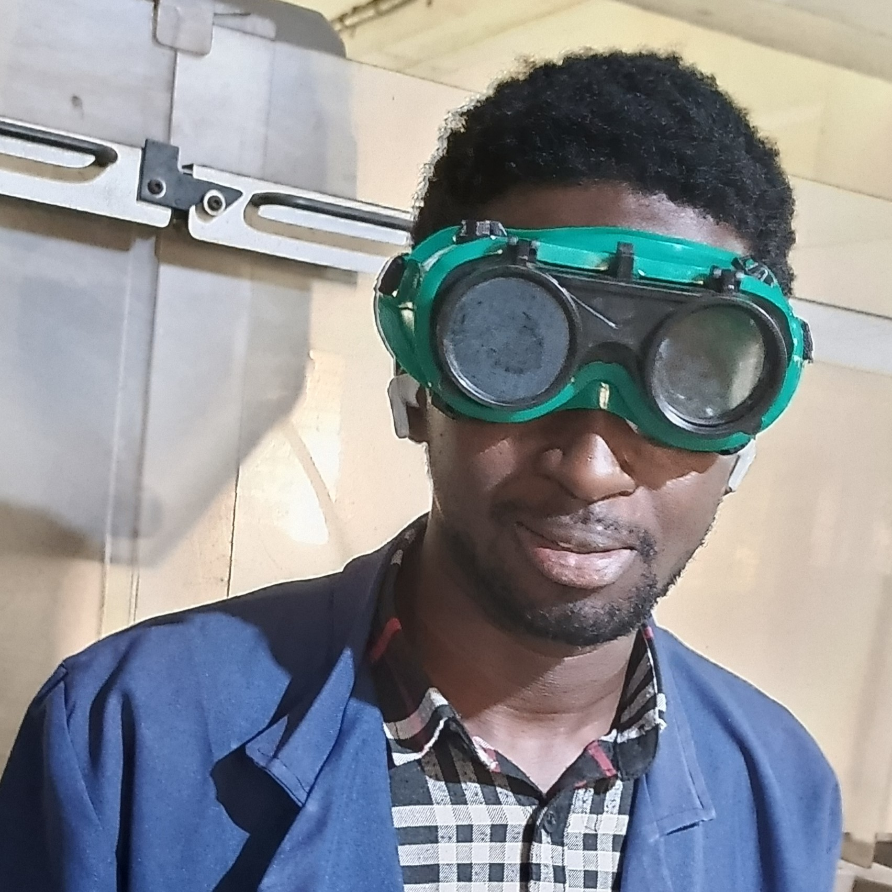

Jare Adebisi

Summary
Jare Adebisi (JayCrown), is a digital entrepreneur, customer service expert, and software engineer with a passion for creative problem-solving and serving others.
Education
- Bachelor of Engineering - University of Ilorin (2018-2025)
- ND (Computer Engineering) - Yaba College of Technology (2016-2018)
Work Experience
- VAA GLOBAL, Nigeria — Virtual Customer Service Intern
AUGUST 2024 - PRESENT
I honed my communication skills, resolving diverse customer inquiries with precision and empathy, ensuring seamless issue resolution and fostering long-lasting relationships, preparing me for a call center communication specialist role.
Skills
- Phone Etiquette and Call Handling
- Customer Relationship Management
- Excellent Communication
- Complaint Resolution
- Teamwork and Management
- Tech: Zoho and Salesforce
Certifications
- Skill Development Council, Canada — Professional Certificate in Customer Service and Relationship Management
AUGUST 2024 - NOVEMBER 2024
Other